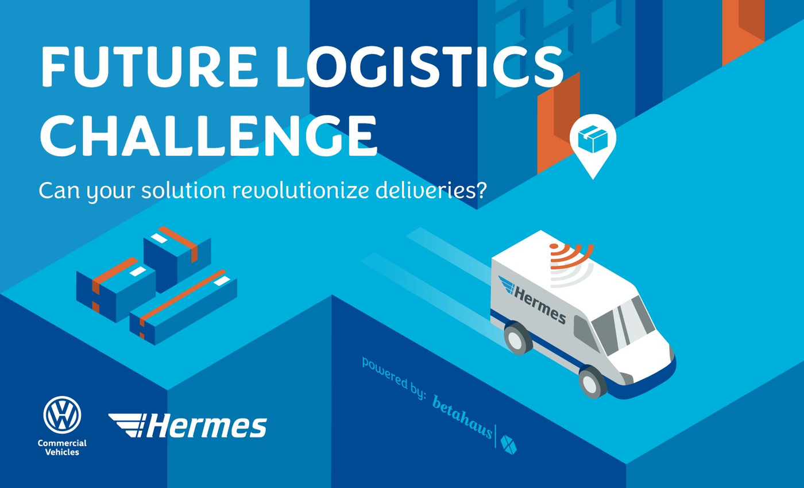
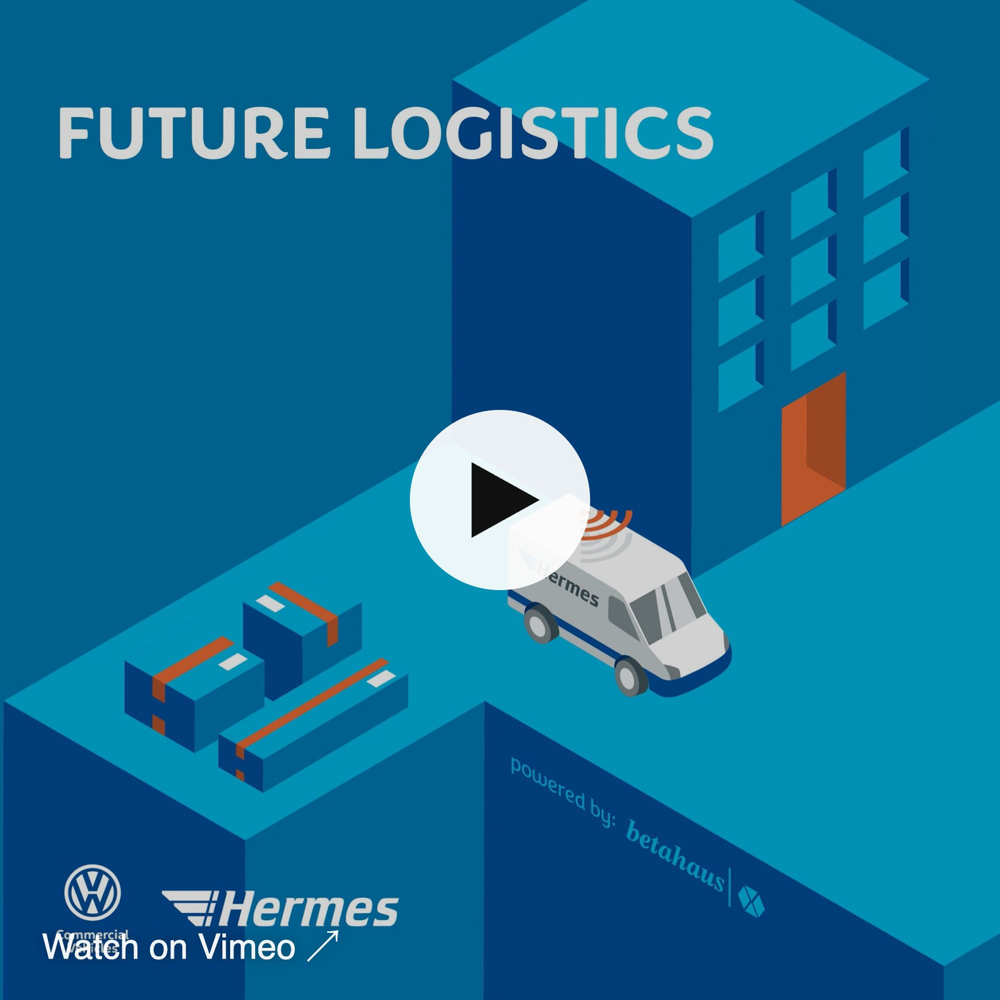
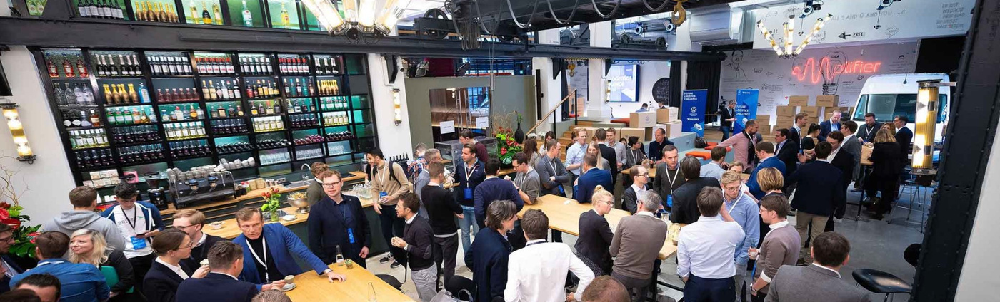
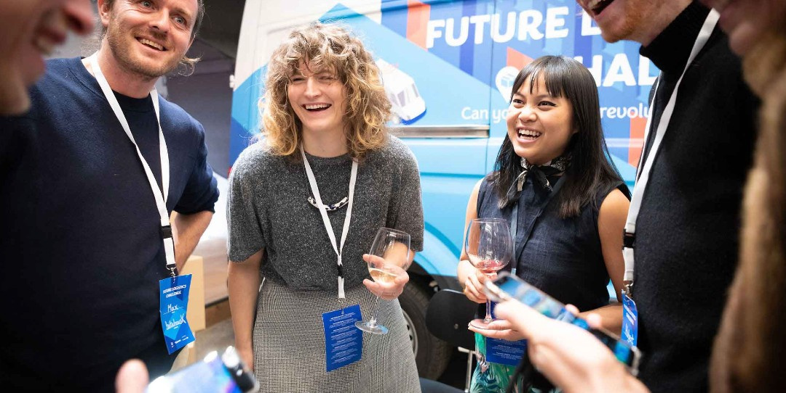
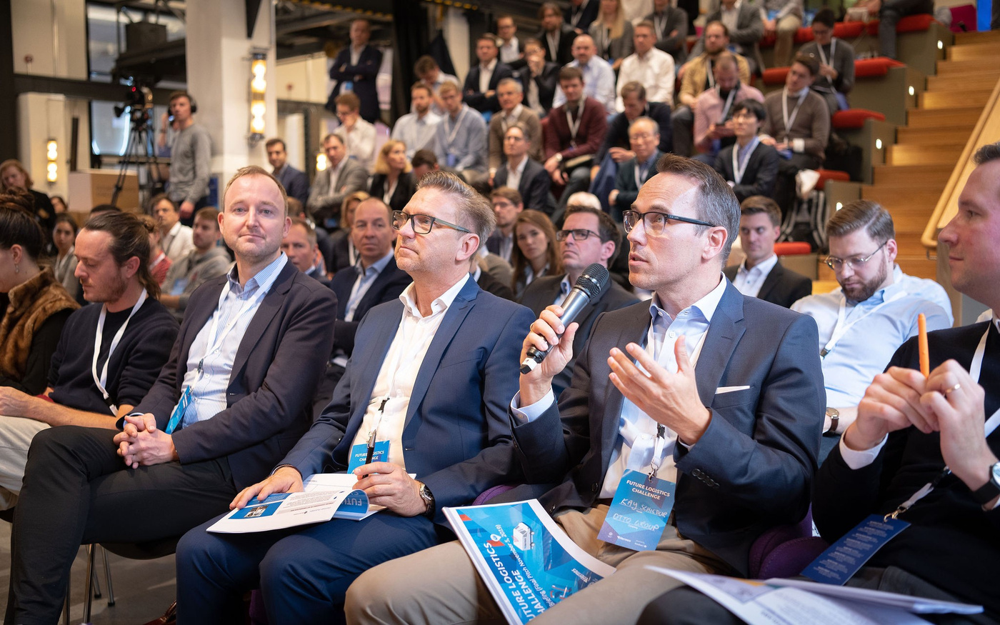

back

Future Logistics Challenge: Open Innovation Campaign & Event for Volkswagen Commercial Vehicles and Hermes
Clients: Volkswagen Commercial Vehicles × Hermes, powered by betahausX · Europe-wide startup challenge · Creative Strategy · Performance Marketing · Event Management · Final in BerlinThe Future Logistics Challenge was a pan-European innovation initiative by Volkswagen Commercial Vehicles and Hermes that invited startups to reimagine the delivery vehicle of the future – more efficient, more sustainable and better for the people who drive it.
I was responsible for creative strategy, campaign development, performance marketing and event communication – taking the challenge to startups, innovators and media across Europe.
Campaign Strategy & Creative Concept
The campaign positioned Volkswagen Commercial Vehicles and Hermes as forward-thinking leaders in smart mobility and last-mile logistics. I developed the overarching creative concept, managed copywriting and design, and aligned every asset under one communication strategy – turning a corporate innovation call into a movement for the future of urban delivery.
Performance Marketing & Europe-wide Reach
To reach the right founders, I led performance marketing across paid social and search advertising (SEA). The data-driven approach created high visibility across Europe and resulted in more than 180 qualified startup applications.
Event Management: The Final in Berlin
The challenge culminated in a final event in Berlin, where the top eight startups pitched to executives from Volkswagen and Hermes, industry experts and press. I was part of the event management and on-site communication team and made sure the campaign’s visual and verbal identity carried seamlessly from digital into the live experience. Two winners, Neohelden and Viscopic, received funding to pilot their solutions with Volkswagen Commercial Vehicles and Hermes.


Event photos: introduce.berlin
My Responsibilities
— Development and execution of the creative campaign for the Future Logistics Challenge— Marketing strategy, brand storytelling and cross-channel communication
— Performance marketing – paid social and SEA – with measurable reach
— Event management and communication for the final event in Berlin
— Alignment of creative direction with the innovation goals of Volkswagen Commercial Vehicles and Hermes
The Future Logistics Challenge became more than an innovation contest – it became a communication success story. By combining creative marketing, strategic storytelling and data-driven performance, the campaign helped position Volkswagen Commercial Vehicles as a proactive leader in smart mobility and the future of logistics.
Today I bring this experience to event management and stakeholder & partner networks at Table Studio, my community & experience studio in Berlin.
Next case: WERDER LAB × Werder Bremen →